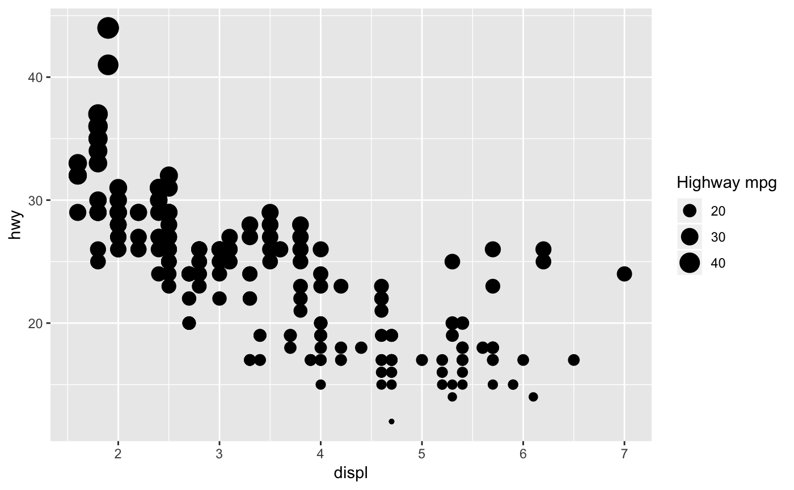
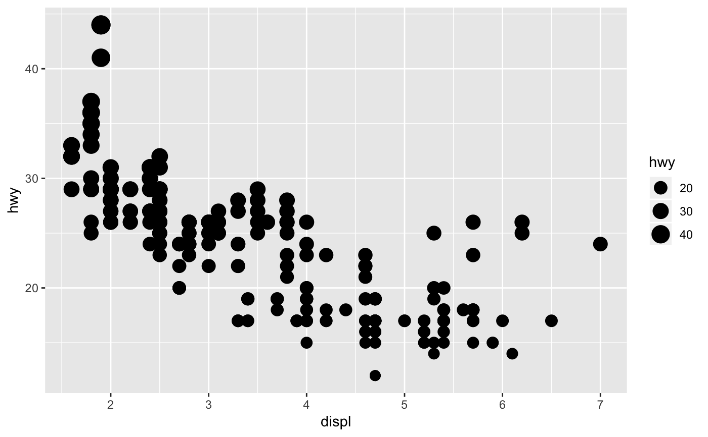
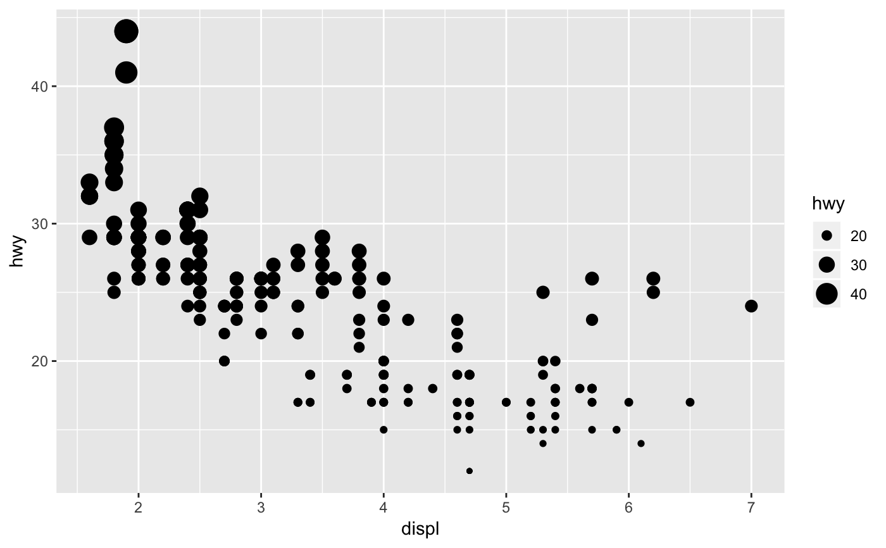
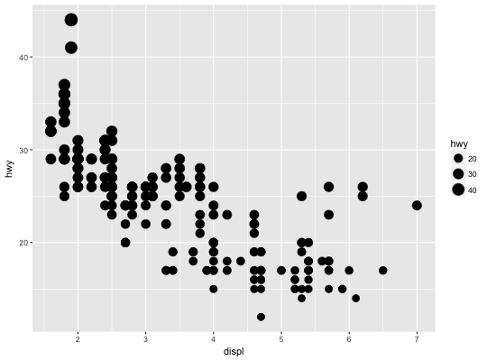
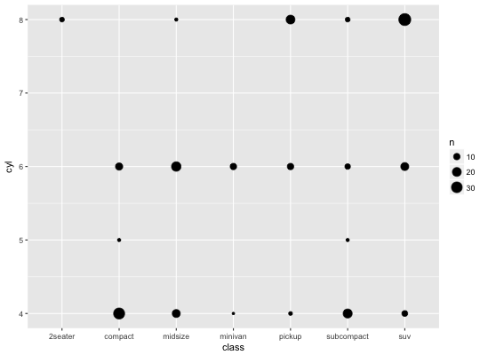
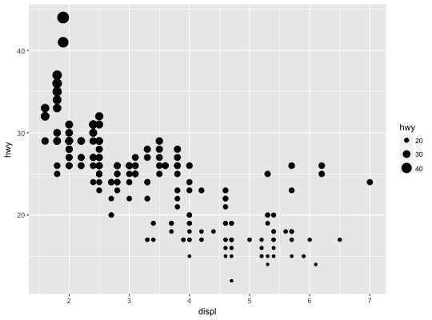

scale_size scales area, scale_radius scales radius. The size
aesthetic is most commonly used for points and text, and humans perceive
the area of points (not their radius), so this provides for optimal
perception. scale_size_area ensures that a value of 0 is mapped
to a size of 0.
scale_radius(name = waiver(), breaks = waiver(), labels = waiver(), limits = NULL, range = c(1, 6), trans = "identity", guide = "legend") scale_size(name = waiver(), breaks = waiver(), labels = waiver(), limits = NULL, range = c(1, 6), trans = "identity", guide = "legend") scale_size_area(..., max_size = 6)
The name of the scale. Used as axis or legend title. If
NULL, the default, the name of the scale is taken from the first
mapping used for that aesthetic.
One of:
NULL for no breaks
waiver() for the default breaks computed by the
transformation object
One of:
NULL for no labels
waiver() for the default labels computed by the
transformation object
breaks)
A numeric vector of length two providing limits of the scale.
Use NA to refer to the existing minimum or maximum.
a numeric vector of length 2 that specifies the minimum and maximum size of the plotting symbol after transformation.
Either the name of a transformation object, or the object itself. Built-in transformations include "asn", "atanh", "boxcox", "exp", "identity", "log", "log10", "log1p", "log2", "logit", "probability", "probit", "reciprocal", "reverse" and "sqrt".
A transformation object bundles together a transform, it's inverse,
and methods for generating breaks and labels. Transformation objects
are defined in the scales package, and are called name_trans, e.g.
boxcox_trans. You can create your own
transformation with trans_new.
Name of guide object, or object itself.
Other arguments passed on to continuous_scale
to control name, limits, breaks, labels and so forth.
Size of largest points.
scale_size_area if you want 0 values to be mapped
to points with size 0.
p + scale_size("Highway mpg")p + scale_size(range = c(0, 10))# If you want zero value to have zero size, use scale_size_area: p + scale_size_area()# This is most useful when size is a count ggplot(mpg, aes(class, cyl)) + geom_count() + scale_size_area()# If you want to map size to radius (usually bad idea), use scale_radius p + scale_radius()